Métodos de Visualización de Datos — Universidad de Buenos Aires
Published
June 5, 2026
Introducción
El presente trabajo analiza el Census Income Dataset (adaptación del Adult Census Income de EE.UU.) para modelar la probabilidad de que un individuo tenga ingresos superiores a $50.000 anuales.
La pregunta de investigación es: ¿qué factores sociodemográficos y laborales determinan la pertenencia al estrato de altos ingresos?
Adoptamos una perspectiva descriptiva-explicativa, estimando modelos de regresión logística binomial e interpretando los efectos de las variables seleccionadas.
Preparación, carga y limpieza de datos
Carga de librerías con pacman
Code
# pacman::p_load instala los paquetes si no están disponibles y los carga.# Usamos exclusivamente las herramientas presentadas en los tutoriales del curso.if (!require("pacman")) install.packages("pacman")pacman::p_load( tidyverse, # manipulación de datos y gráficos (dplyr, ggplot2, etc.) here, # rutas relativas reproducibles broom, # tidying de modelos (tidy, augment, glance) marginaleffects, # efectos marginales promedio (avg_slopes, predictions) modelsummary # tablas comparativas de modelos)
There are binary versions available but the source versions are later:
binary source needs_compilation
data.table 1.17.0 1.18.4 TRUE
modelsummary 2.3.0 2.6.0 FALSE
Binaries will be installed
package 'data.table' successfully unpacked and MD5 sums checked
The downloaded binary packages are in
C:\Users\Martu\AppData\Local\Temp\RtmpWq4Uov\downloaded_packages
Carga de datos con here
Code
# here::here() construye rutas relativas al directorio raíz del proyecto .Rproj,# lo que garantiza reproducibilidad independientemente del sistema operativo.# La estructura de carpetas esperada es: /TP3/data/adult_census_USA.csvdf_raw <-read_csv(here("TP3", "data", "adult_census_USA.csv"))# Vista previa de las primeras filashead(df_raw)
Limpieza y transformaciones
Variable objetivo: income
La variable income tiene dos categorías: "<=50K" y ">50K". Para la regresión logística binomial necesitamos que:
0 = ingresos bajos (<=50K) → clase de referencia
1 = ingresos altos (>50K) → clase a predecir
Code
# Convertimos income en una variable binaria numérica:# 0 = ingresos bajos (<=50K) → clase de referencia# 1 = ingresos altos (>50K) → evento a predecirdf_raw <- df_raw |>mutate(income =if_else(income ==">50K", 1, 0) )# Verificamos la distribución de clasesdf_raw |>count(income) |>mutate(prop = n /sum(n))
Balance de clases: con ~52% de ingresos bajos y ~48% de ingresos altos, las clases están razonablemente balanceadas. No es necesario aplicar técnicas de remuestreo.
Simplificación de marital_status
Siguiendo la sugerencia del enunciado, colapsamos las siete categorías de estado civil en dos:
"married": incluye Married-civ-spouse y Married-AF-spouse
"single": todos los demás (divorciados, separados, viudos, nunca casados)
Justificación teórica: la literatura en economía laboral señala que el matrimonio, especialmente en hombres, se asocia con mayor estabilidad laboral, mayor dedicación horaria y salarios más altos (efecto “marriage premium”). Distinguir simplemente casado/no-casado captura esta heterogeneidad de forma parsimoniosa.
Selección de variables y creación del dataset de análisis
Seleccionamos las variables con mayor sustento teórico para explicar el ingreso:
Variable
Tipo
Justificación
age
Numérica continua
Proxy de experiencia laboral acumulada
education_num
Numérica ordinal
Años de escolaridad; mayor educación → mayor productividad → mayor salario
marital_status
Categórica binaria
“Marriage premium” ampliamente documentado
sex
Categórica binaria
Brecha de género en salarios (gender pay gap)
occupation
Categórica
Sector laboral; heterogeneidad ocupacional en salarios
hours_per_week
Numérica continua
Mayor dedicación horaria se asocia con más ingresos
capital_gain
Numérica continua
Ingresos por capital indican riqueza preexistente
Variables excluidas:
native_country: demasiadas categorías con pocas observaciones; incorporarla generaría alta varianza sin ganancia explicativa clara.
race: teóricamente relevante, pero su efecto queda en parte capturado por educación y ocupación en este modelo parsimonioso; se puede incluir en extensiones.
relationship, workclass: alto solapamiento con marital_status, sex y occupation.
education (texto): redundante con education_num (su versión numérica ordinal).
capital_loss: muy poca varianza (la mayoría en 0); no aporta señal robusta.
Code
# sex: 1 = Male, 0 = Female (referencia)# Elegimos Female como referencia para capturar la brecha de génerodf_raw <- df_raw |>mutate(sex_male =if_else(sex =="Male", 1L, 0L))# occupation: dummies con "Other-service" como referencia (menor salario esperado)# Cada dummy indica si el individuo pertenece a esa ocupación (1) o no (0)df_raw <- df_raw |>mutate(occ_exec_managerial =if_else(occupation =="Exec-managerial", 1L, 0L),occ_prof_specialty =if_else(occupation =="Prof-specialty", 1L, 0L),occ_sales =if_else(occupation =="Sales", 1L, 0L),occ_craft_repair =if_else(occupation =="Craft-repair", 1L, 0L),occ_adm_clerical =if_else(occupation =="Adm-clerical", 1L, 0L),occ_transport =if_else(occupation =="Transport-moving", 1L, 0L),occ_machine_op =if_else(occupation =="Machine-op-inspct", 1L, 0L),occ_tech_support =if_else(occupation =="Tech-support", 1L, 0L),occ_protective_serv =if_else(occupation =="Protective-serv", 1L, 0L),occ_farming_fishing =if_else(occupation =="Farming-fishing", 1L, 0L),occ_handlers =if_else(occupation =="Handlers-cleaners", 1L, 0L),occ_priv_house =if_else(occupation =="Priv-house-serv", 1L, 0L),occ_armed_forces =if_else(occupation =="Armed-Forces", 1L, 0L)# "Other-service" queda como referencia: cuando todas las dummies son 0 )# Eliminamos las columnas originales que ya fueron recodificadasdf_raw <- df_raw |>select(-sex, -occupation)# Vista rápida del resultadoglimpse(df_raw)
Definición de categorías de referencia en variables categóricas
Para que los coeficientes cuenten una historia coherente, elegimos las referencias de la siguiente manera:
marital_status: referencia = "single" → los coeficientes mostrarán el efecto de estar casado respecto de no estarlo.
sex: referencia = "Female" → los coeficientes mostrarán el efecto de ser hombre respecto de ser mujer, capturando la brecha de género.
occupation: referencia = "Other-service" → es la categoría de menor salario esperado; todos los efectos ocupacionales serán positivos respecto de esta base.
Code
df <- df_raw |>select( income, # variable dependiente (0/1) age, # edad education_num, # años de educación marital_status, # casado (1) vs soltero (0) sex_male, # hombre (1) vs mujer (0) hours_per_week, # horas semanales capital_gain, # ganancias de capitalstarts_with("occ_") # todas las dummies de ocupación ) |>drop_na()glimpse(df)
# income es 0/1, lo convertimos a factor con etiquetas solo para graficarggplot(df, aes(x =factor(income, labels =c("<=50K", ">50K")),fill =factor(income, labels =c("<=50K", ">50K")))) +geom_bar(alpha =0.8, color ="white") +geom_text(stat ="count", aes(label =after_stat(count)), vjust =-0.4, size =4) +scale_fill_manual(values =c("<=50K"="steelblue", ">50K"="tomato")) +theme_bw() +theme(legend.position ="none") +labs(title ="Distribución de ingresos",subtitle ="Las clases están razonablemente balanceadas (~52% vs ~48%)",x ="Categoría de ingreso",y ="Cantidad de individuos" )
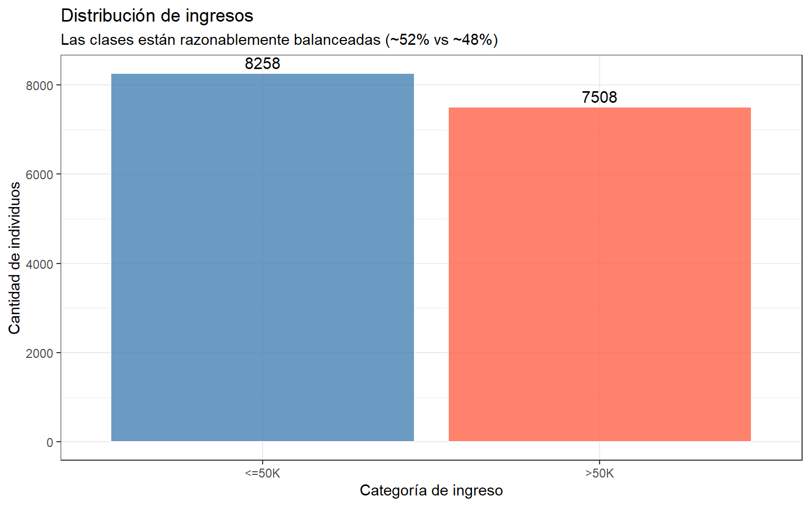
Variables continuas vs. ingreso
Edad
Code
ggplot(df, aes(x = age, fill =factor(income, labels =c("<=50K", ">50K")))) +geom_density(alpha =0.4) +scale_fill_manual(values =c("steelblue", "tomato")) +theme_bw() +labs(title ="Distribución de edad por nivel de ingreso",subtitle ="Los individuos de altos ingresos tienden a ser mayores (más experiencia)",x ="Edad",y ="Densidad",fill ="Ingreso" )
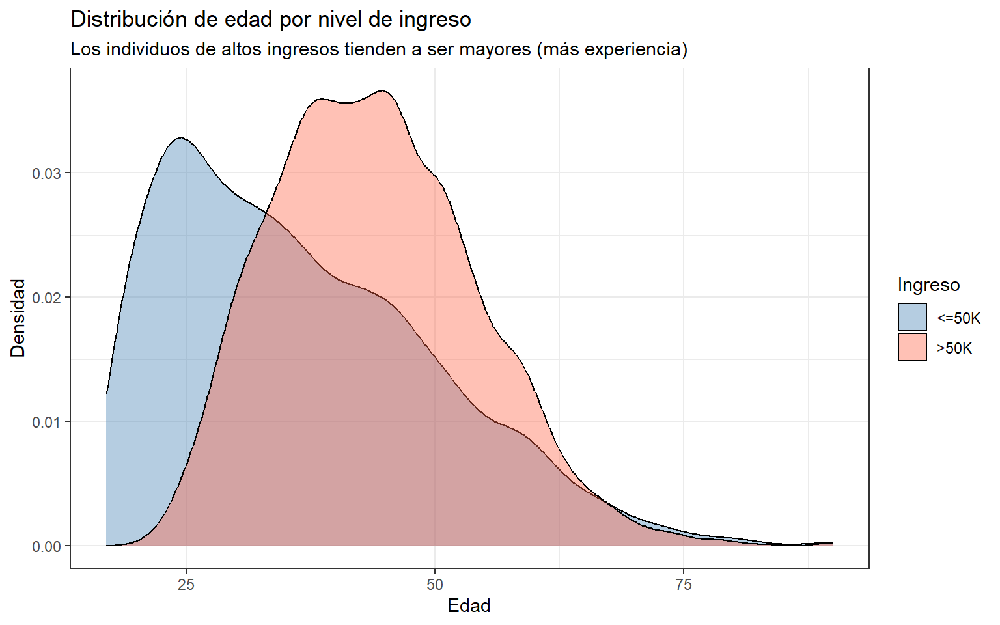
Años de educación
Code
ggplot(df, aes(x =factor(education_num),fill =factor(income, labels =c("<=50K", ">50K")))) +geom_bar(position ="fill", alpha =0.85, color ="white") +scale_fill_manual(values =c("steelblue", "tomato")) +scale_y_continuous(labels = scales::percent) +theme_bw() +labs(title ="Proporción de altos ingresos según años de educación",subtitle ="A más años de educación, mayor proporción de ingresos altos",x ="Años de educación (education_num)",y ="Proporción",fill ="Ingreso" )
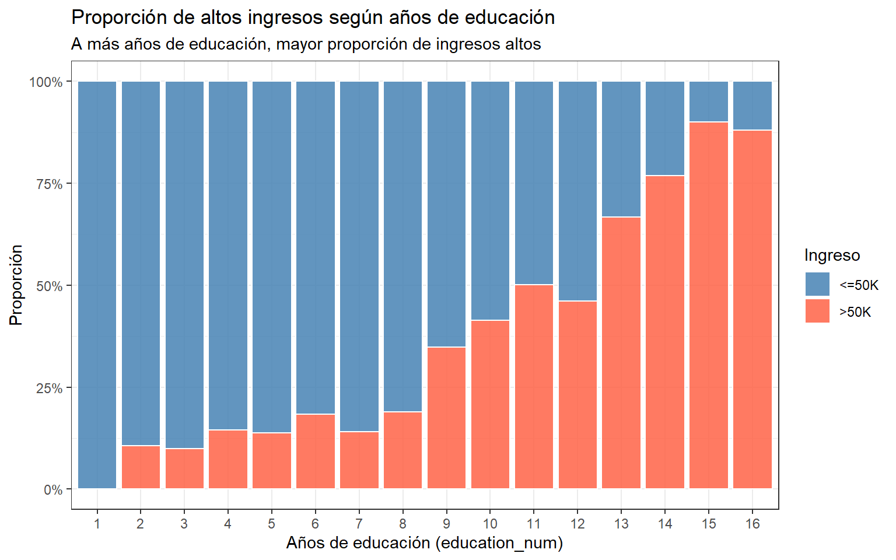
Horas semanales
Code
ggplot(df, aes(x =factor(income, labels =c("<=50K", ">50K")),y = hours_per_week,fill =factor(income, labels =c("<=50K", ">50K")))) +geom_boxplot(alpha =0.5, outlier.alpha =0.3) +scale_fill_manual(values =c("steelblue", "tomato")) +theme_bw() +theme(legend.position ="none") +labs(title ="Horas trabajadas por semana según nivel de ingreso",x ="Categoría de ingreso",y ="Horas por semana" )
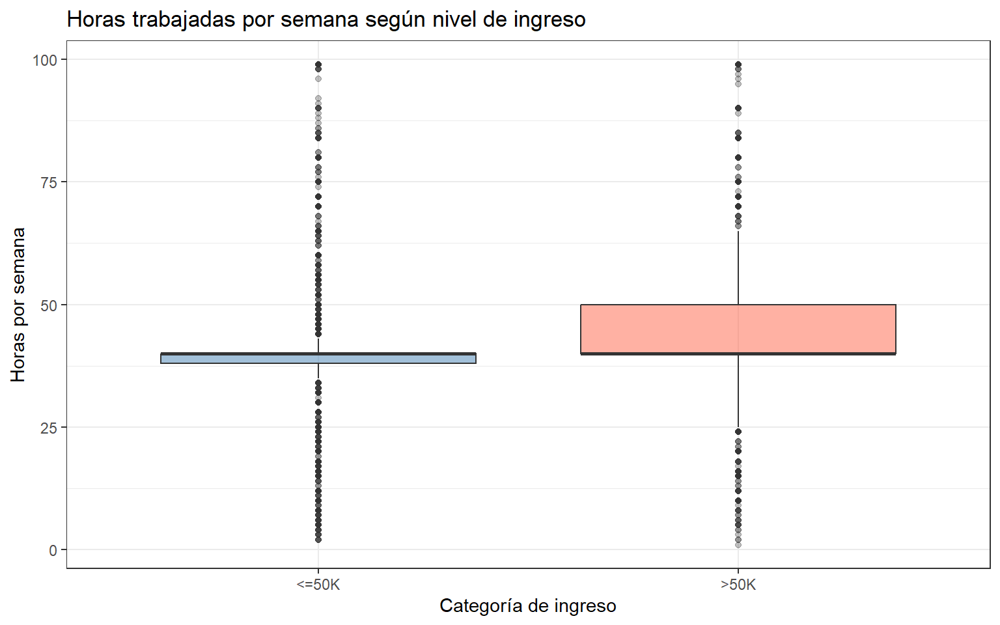
Capital gain
Code
# capital_gain tiene distribución muy sesgada a la derecha (mediana = 0, máx ≈ 100.000).# Aplicamos log1p(x) = log(x + 1) para comprimir la escala sin problemas en x = 0.ggplot(df, aes(x =log1p(capital_gain),fill =factor(income, labels =c("<=50K", ">50K")))) +geom_density(alpha =0.4) +scale_fill_manual(values =c("steelblue", "tomato")) +theme_bw() +labs(title ="Distribución de capital_gain (escala log1p) por nivel de ingreso",subtitle ="log1p transforma valores extremos y ceros sin generar discontinuidades",x ="log(capital_gain + 1)",y ="Densidad",fill ="Ingreso" )
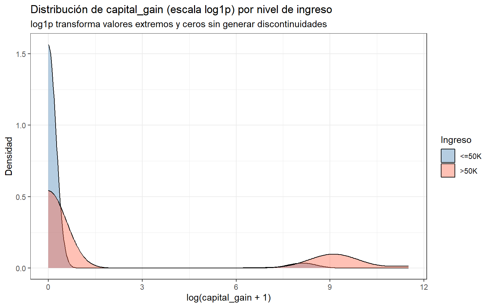
Variables categóricas vs. ingreso
Sexo
Code
# sex_male es 0/1; lo etiquetamos solo para el gráficoggplot(df, aes(x =factor(sex_male, labels =c("Female", "Male")),fill =factor(income, labels =c("<=50K", ">50K")))) +geom_bar(position ="fill", alpha =0.85, color ="white") +scale_fill_manual(values =c("steelblue", "tomato")) +scale_y_continuous(labels = scales::percent) +theme_bw() +labs(title ="Proporción de altos ingresos según sexo",subtitle ="Los hombres tienen una proporción notablemente mayor de ingresos altos",x ="Sexo",y ="Proporción",fill ="Ingreso" )
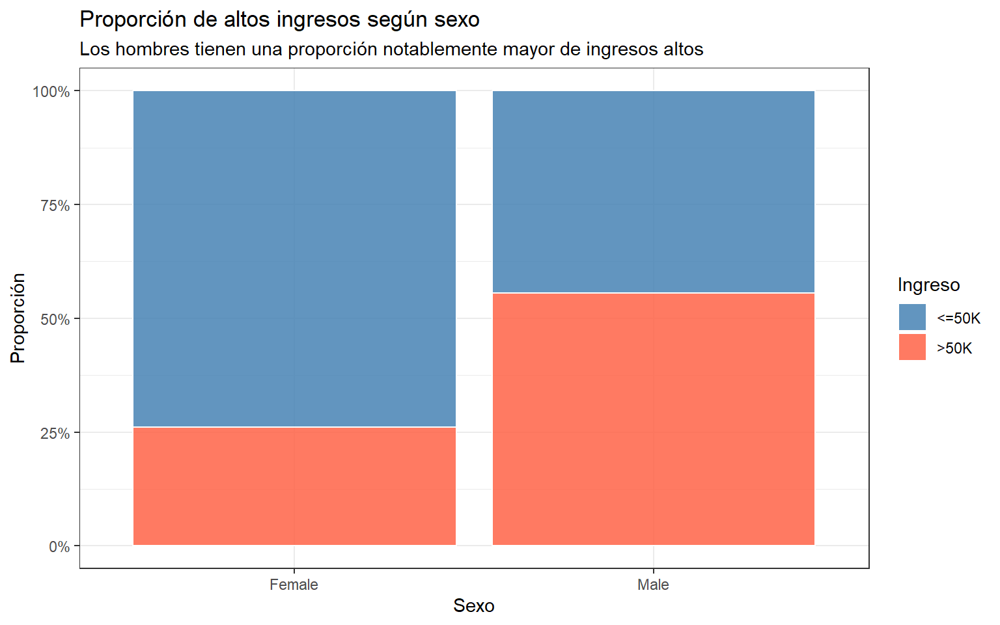
Estado civil
Code
ggplot(df, aes(x =factor(marital_status, labels =c("Single", "Married")),fill =factor(income, labels =c("<=50K", ">50K")))) +geom_bar(position ="fill", alpha =0.85, color ="white") +scale_fill_manual(values =c("steelblue", "tomato")) +scale_y_continuous(labels = scales::percent) +theme_bw() +labs(title ="Proporción de altos ingresos según estado civil",subtitle ="Las personas casadas tienen mayor probabilidad de altos ingresos",x ="Estado civil",y ="Proporción",fill ="Ingreso" )
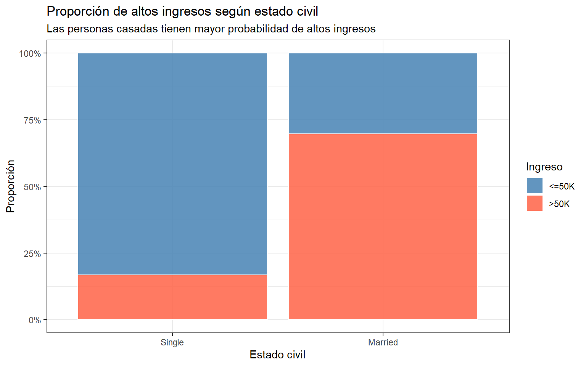
Ocupación
Code
# Las dummies de ocupación están en formato ancho; las pivotamos a largo# para poder graficar la proporción de altos ingresos por categoríadf |>select(income, starts_with("occ_")) |>pivot_longer(cols =starts_with("occ_"),names_to ="occupation",values_to ="pertenece") |>filter(pertenece ==1) |># nos quedamos solo con la ocupación activa de cada personamutate(occupation =str_remove(occupation, "occ_"), # sacamos el prefijooccupation =str_replace_all(occupation, "_", " ") # espacios para leer mejor ) |>group_by(occupation) |>summarise(prop_high =mean(income ==1)) |>ggplot(aes(x =reorder(occupation, prop_high), y = prop_high, fill = prop_high)) +geom_col(alpha =0.85) +coord_flip() +scale_fill_gradient(low ="steelblue", high ="tomato") +scale_y_continuous(labels = scales::percent) +theme_bw() +theme(legend.position ="none") +labs(title ="Proporción de altos ingresos por ocupación",subtitle ="Exec-managerial y Prof-specialty concentran la mayor proporción de altos ingresos",x =NULL,y ="Proporción con ingresos >50K" )
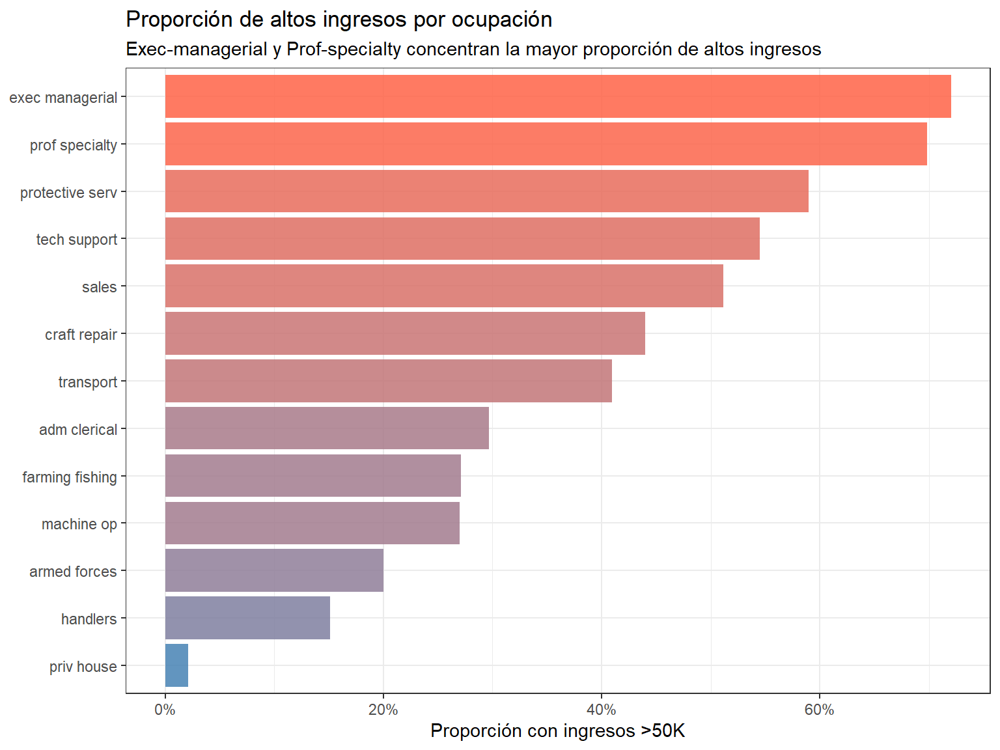
Justificación de la interacción: education_num × sex
Hipótesis teórica: la evidencia empírica en economía laboral indica que el retorno educativo sobre los ingresos no es igual para hombres y mujeres. En particular, las mujeres a menudo obtienen menores rendimientos salariales por año adicional de educación que los hombres, posiblemente por segregación ocupacional, discriminación o diferencias en la negociación salarial.
Code
# Visualizamos la interacción: si las líneas son paralelas, no hay interacción;# si se cruzan o tienen pendientes distintas, la interacción es relevante.df |>group_by(education_num, sex_male) |>summarise(prop_high =mean(income ==1), .groups ="drop") |>ggplot(aes(x = education_num, y = prop_high,color =factor(sex_male, labels =c("Female", "Male")))) +geom_point(alpha =0.7, size =2) +geom_smooth(method ="loess", se =TRUE, alpha =0.15) +scale_color_manual(values =c("Female"="steelblue", "Male"="tomato")) +scale_y_continuous(labels = scales::percent) +theme_bw() +labs(title ="Proporción de altos ingresos por años de educación y sexo",subtitle ="Las pendientes difieren entre hombres y mujeres → interacción relevante",x ="Años de educación",y ="Prop. con ingresos >50K",color ="Sexo" )
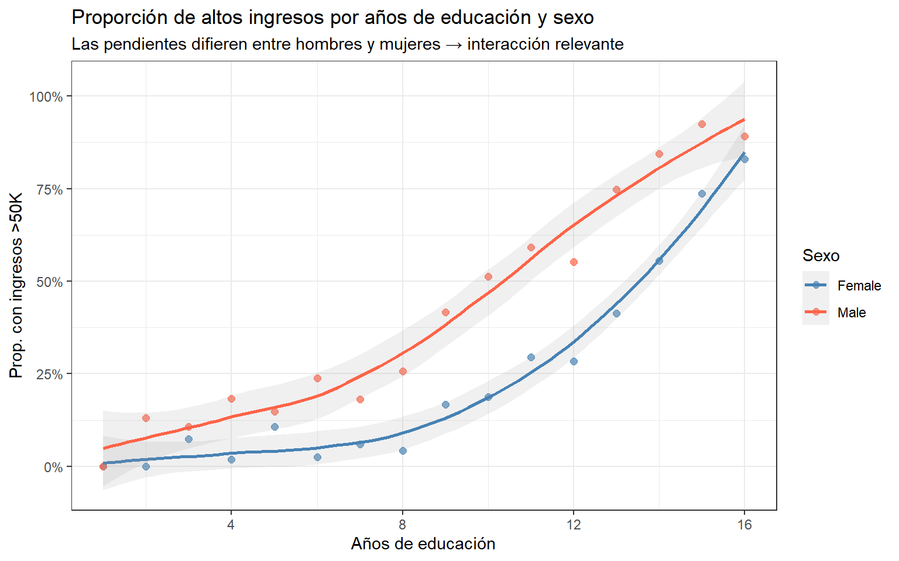
Figure 1: Interacción educación × sexo
El gráfico muestra que la pendiente de la relación educación-ingreso es más pronunciada en hombres, lo que confirma la pertinencia del término de interacción education_num:sex. Este término captura que el beneficio marginal de un año adicional de educación sobre la probabilidad de altos ingresos es diferente según el sexo.
#Ajuste de modelos ## Modelo 1 — Base (sin interacciones)
Code
# Modelo 1: regresión logística estándar con familia binomial (logit link).# Incluimos todos los predictores seleccionados.# Las dummies de ocupación reemplazan a la variable occupation original.# log1p(capital_gain) aplica la transformación logarítmica discutida en el EDA.# La referencia de ocupación es "Other-service" (cuando todas las dummies occ_ son 0).model_1 <-glm( income ~ age + education_num + marital_status + sex_male + occ_exec_managerial + occ_prof_specialty + occ_sales + occ_craft_repair + occ_adm_clerical + occ_transport + occ_machine_op + occ_tech_support + occ_protective_serv + occ_farming_fishing + occ_handlers + occ_priv_house + occ_armed_forces + hours_per_week +log1p(capital_gain),data = df,family =binomial("logit"))summary(model_1)
# Modelo 2: igual que el Modelo 1 pero agrega el término de interacción# education_num:sex_male, que permite que el efecto de la educación sobre el log-odds# de altos ingresos varíe según el sexo del individuo.# Como ambas variables son numéricas (0/1 y continua), el término de interacción# education_num:sex_male captura la diferencia de pendiente entre hombres y mujeres.model_2 <-glm( income ~ age + education_num * sex_male + marital_status + occ_exec_managerial + occ_prof_specialty + occ_sales + occ_craft_repair + occ_adm_clerical + occ_transport + occ_machine_op + occ_tech_support + occ_protective_serv + occ_farming_fishing + occ_handlers + occ_priv_house + occ_armed_forces + hours_per_week +log1p(capital_gain),data = df,family =binomial("logit"))summary(model_2)
##Tabla de Efectos Marginales Promedio (AME) — Modelo 2
Los Efectos Marginales Promedio (AME) expresan el cambio promedio en la probabilidad (no en el log-odds) de tener ingresos >50K ante un cambio unitario en cada predictor, promediando sobre todos los individuos de la muestra.
Esto los hace más interpretables que los coeficientes logísticos o los odds-ratios, porque hablan directamente en términos de probabilidad.
Code
# avg_slopes() calcula el cambio promedio en probabilidad (no en log-odds)# ante un cambio unitario en cada predictor, promediando sobre toda la muestra.# Es más interpretable que los OR porque habla directamente en puntos porcentuales.ame_m2 <- marginaleffects::avg_slopes(model_2) |>as_tibble()ame_m2 |>select(term, contrast, estimate, std.error, statistic, p.value, conf.low, conf.high) |>mutate(across(where(is.numeric), ~round(.x, 4)),sig =case_when( p.value <0.001~"***", p.value <0.01~"**", p.value <0.05~"*", p.value <0.1~".",TRUE~"" ) ) |> knitr::kable(col.names =c("Variable", "Contraste", "AME", "Error est.", "z", "p-valor","IC inf. (95%)", "IC sup. (95%)", "Sig."),caption ="Efectos Marginales Promedio (AME) — Modelo 2. *** p<0.001, ** p<0.01, * p<0.05" )
# broom::tidy() extrae coeficientes, errores estándar e intervalos de confianza.# exponentiate = TRUE convierte log-odds → odds-ratios (OR).# Calculamos manualmente los IC al 80%, 95% y 99% para mostrar "grosor graduado".coefs <- broom::tidy(model_2, conf.int =FALSE) |>filter(term !="(Intercept)") |>mutate(OR =exp(estimate),lo80 =exp(estimate -1.282* std.error),hi80 =exp(estimate +1.282* std.error),lo95 =exp(estimate -1.960* std.error),hi95 =exp(estimate +1.960* std.error),lo99 =exp(estimate -2.576* std.error),hi99 =exp(estimate +2.576* std.error),sig = p.value <0.05,# Etiquetas legibles que coinciden con los nombres reales del outputterm =str_replace_all(term, c("education_num:sex_male"="Educación × Sexo masc.","marital_status"="Est. civil: casado","sex_male"="Sexo: masculino","education_num"="Años de educación","age"="Edad","hours_per_week"="Horas semanales","log1p\\(capital_gain\\)"="log(capital gain + 1)","occ_exec_managerial"="Ocup: Exec-managerial","occ_prof_specialty"="Ocup: Prof-specialty","occ_sales"="Ocup: Sales","occ_craft_repair"="Ocup: Craft-repair","occ_adm_clerical"="Ocup: Adm-clerical","occ_transport"="Ocup: Transport","occ_machine_op"="Ocup: Machine-op","occ_tech_support"="Ocup: Tech-support","occ_protective_serv"="Ocup: Protective-serv","occ_farming_fishing"="Ocup: Farming-fishing","occ_handlers"="Ocup: Handlers","occ_priv_house"="Ocup: Priv-house-serv","occ_armed_forces"="Ocup: Armed-forces" )) )ggplot(coefs, aes(y =reorder(term, OR))) +geom_linerange(aes(xmin = lo99, xmax = hi99), linewidth =0.5,color ="grey60", alpha =0.6) +geom_linerange(aes(xmin = lo95, xmax = hi95), linewidth =1.2,color ="grey40", alpha =0.7) +geom_linerange(aes(xmin = lo80, xmax = hi80), linewidth =2.2,color ="grey20", alpha =0.8) +geom_point(aes(x = OR, color = sig), size =2.5) +geom_vline(xintercept =1, linetype ="dashed", color ="red", alpha =0.7) +scale_x_log10() +scale_color_manual(values =c("TRUE"="tomato", "FALSE"="steelblue"),labels =c("TRUE"="Significativo (p<0.05)", "FALSE"="No significativo"),name =NULL ) +theme_bw() +theme(legend.position ="bottom", axis.text.y =element_text(size =8)) +labs(title ="Forest Plot — Odds Ratios del Modelo 2 (escala logarítmica)",subtitle ="Barras: IC al 80% (gruesa), 95% (media) y 99% (delgada)\nLínea roja: OR = 1 (sin efecto)",x ="Odds Ratio (escala log)",y =NULL )
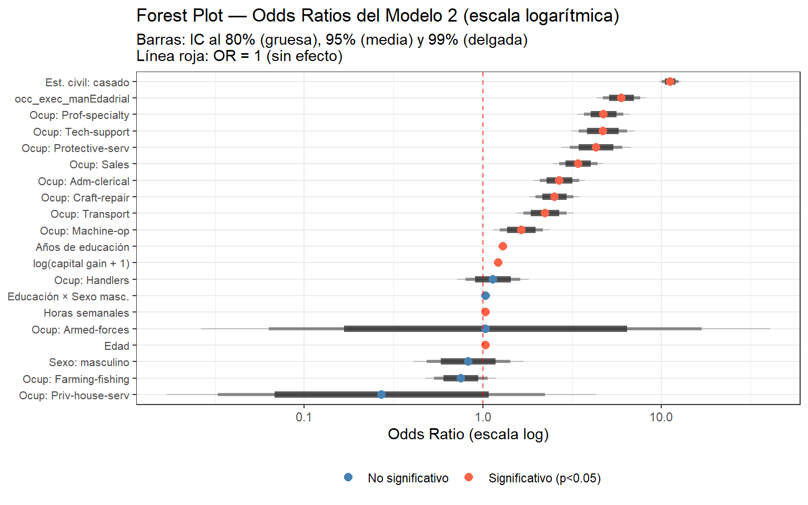
Interpretación de variables significativas
A partir de los AME y los OR del Modelo 2, las variables con efectos estadísticamente significativos se interpretan así:
education_num (años de educación):Por cada año adicional de educación, la probabilidad de tener ingresos altos aumenta en promedio 3.76 puntos porcentuales (AME = 0.0376, p < 0.001). Este efecto corresponde al caso de mujeres (sex_male = 0), dado el término de interacción presente en el modelo. Es uno de los efectos más grandes entre las variables continuas, consistente con la teoría del capital humano: la educación incrementa la productividad marginal del trabajador y, con ella, su salario de mercado.
education_num:sexMale (interacción educación × sexo): El coeficiente de la interacción es 0.038 (OR ≈ 1.038) pero no resulta estadísticamente significativo (p = 0.116). Esto implica que, con estos datos, no hay evidencia suficiente para afirmar que el retorno educativo sobre la probabilidad de altos ingresos difiere significativamente entre hombres y mujeres. La dirección del efecto es la esperada teóricamente —hombres obtendrían un retorno marginalmente mayor por año de educación adicional (exp(0.256 + 0.038) ≈ 1.34 vs. exp(0.256) ≈ 1.29 en mujeres)— pero la diferencia no supera el umbral de significancia. Esto puede deberse a que la heterogeneidad de género queda ya capturada por las dummies de ocupación, que absorben parte de la segregación sectorial.
marital_statusmarried (casado vs. soltero): Es la variable con el efecto más grande del modelo. El AME indica que estar casado aumenta la probabilidad de tener ingresos altos en 38.05 puntos porcentuales en promedio (AME = 0.3805, p < 0.001). En términos de odds, el OR es exp(2.415) ≈ 11.2: las odds de pertenecer al estrato de altos ingresos son más de once veces mayores para una persona casada que para una soltera, manteniendo el resto de las variables constantes. Este resultado refleja el llamado “marriage premium”: las personas casadas tienden a tener mayor estabilidad laboral, mayor dedicación horaria y, posiblemente, mayor capital social. También puede existir un componente de selección, dado que individuos con mayor capital humano tienen mayor probabilidad tanto de casarse como de alcanzar ingresos altos.
sexMale (hombre vs. mujer): Ser hombre aumenta la probabilidad de tener ingresos altos en 2.84 puntos porcentuales en promedio (AME = 0.0284, p < 0.001). Nótese que el coeficiente logístico de sex_male aislado no es significativo (p = 0.493), lo cual es esperable cuando existe una interacción: el efecto del sexo depende del nivel de educación y no puede leerse de forma independiente del término education_num:sex_male. El AME, al promediar sobre todos los niveles de educación observados en la muestra, captura el efecto total y sí resulta significativo, evidenciando la brecha de género en ingresos incluso controlando por educación, ocupación y horas trabajadas.
age (edad): Por cada año adicional de edad, la probabilidad de altos ingresos aumenta en promedio 0.44 puntos porcentuales (AME = 0.0044, p < 0.001). El efecto es pequeño por unidad, pero acumula relevancia a lo largo de la trayectoria laboral: un trabajador de 50 años tiene, en promedio, aproximadamente 4 puntos porcentuales más de probabilidad de altos ingresos que uno de 40, ceteris paribus.
hours_per_week (horas semanales):Cada hora semanal adicional de trabajo se asocia con un aumento promedio de 0.44 puntos porcentuales en la probabilidad de altos ingresos (AME = 0.0044, p < 0.001). Este efecto refleja que una mayor dedicación horaria está asociada a puestos de mayor responsabilidad y compensación, o bien a que los individuos de altos ingresos trabajan más horas porque su salario por hora los incentiva a ello.
log1p(capital_gain) (ganancias de capital, log): El AME de capital_gain es técnicamente 0.0000 en la tabla porque está expresado en unidades originales, pero el coeficiente logístico (0.197, p < 0.001) indica que cada unidad adicional en la escala log1p aumenta las odds en un factor de exp(0.197) ≈ 1.22 (22% más). Las ganancias de capital son un indicador de riqueza preexistente y de participación en mercados financieros, ambas características más frecuentes en el estrato de altos ingresos. La transformación log1p fue necesaria por la asimetría extrema de esta variable (la mayoría de observaciones vale 0).
occupation: Las ocupaciones con mayor efecto sobre la probabilidad de altos ingresos son Exec-managerial (AME = +23.7 pp, OR ≈ 5.97) y Prof-specialty (AME = +20.5 pp, OR ≈ 4.75), seguidas de Tech-support (AME = +19.5 pp) y Protective-serv (AME = +18.5 pp). Estas diferencias son todas significativas (p < 0.001) y coherentes con la estructura salarial observada en el EDA. Por el contrario, Farming-fishing, Handlers, Priv-house-serv y Armed-forces no presentan diferencias significativas respecto de la categoría de referencia, lo que sugiere que sus condiciones salariales son similares a las de Other-service.
Comparación Global de Modelos
##Tabla comparativa con AIC y Pseudo-R²
Code
# broom::glance() extrae métricas de ajuste global del modelo.g1 <- broom::glance(model_1)g2 <- broom::glance(model_2)# Pseudo-R² de McFadden: 1 - (deviance residual / deviance nula)# Interpretación: proporción de la devianza nula explicada por el modelo.# Valores > 0.2 se consideran buenos en modelos logísticos.pseudo_r2 <-function(model) {1- (model$deviance / model$null.deviance)}tabla_comp <-tibble(Modelo =c("Modelo 1 (Base)", "Modelo 2 (Interactivo)"),Observaciones =c(g1$nobs, g2$nobs),`Deviance nula`=round(c(g1$null.deviance, g2$null.deviance), 2),`Deviance residual`=round(c(g1$deviance, g2$deviance), 2),AIC =round(c(g1$AIC, g2$AIC), 2),BIC =round(c(g1$BIC, g2$BIC), 2),`Pseudo-R² (McFadden)`=round(c(pseudo_r2(model_1), pseudo_r2(model_2)), 4))knitr::kable( tabla_comp,caption ="Comparación de ajuste global entre Modelo 1 y Modelo 2")
Comparación de ajuste global entre Modelo 1 y Modelo 2
Modelo
Observaciones
Deviance nula
Deviance residual
AIC
BIC
Pseudo-R² (McFadden)
Modelo 1 (Base)
15766
21820.63
12947.25
12987.25
13140.56
0.4067
Modelo 2 (Interactivo)
15766
21820.63
12944.80
12986.80
13147.78
0.4068
Test de razón de verosimilitud
Code
# anova() con test = "Chisq" realiza el test de razón de verosimilitud (LRT)# entre dos modelos anidados. El Modelo 1 es el restringido (sin interacción)# y el Modelo 2 es el no restringido (con interacción education_num:sex_male).# H0: el coeficiente de education_num:sex_male = 0 (la interacción no aporta)# Si p < 0.05 → rechazamos H0 → la interacción mejora significativamente el ajuste.lrt <-anova(model_1, model_2, test ="Chisq")print(lrt)
Ambos modelos presentan métricas de ajuste prácticamente idénticas:
AIC: Modelo 1 = 12987.25 vs. Modelo 2 = 12986.80. La diferencia es de apenas 0.45 puntos, lo que es sustantivamente insignificante (diferencias menores a 2 se consideran negligibles).
Deviance residual: la interacción reduce la devianza en 2.45 puntos con 1 grado de libertad adicional, una reducción mínima sobre una devianza residual de ~12947.
Pseudo-R² de McFadden: 0.4067 vs. 0.4068, una diferencia de 0.0001, prácticamente nula. Ambos modelos explican aproximadamente el 40.7% de la devianza nula, lo que constituye un ajuste sólido para un modelo logístico.
Test de razón de verosimilitud: χ²(1) = 2.45, p = 0.118 > 0.05. No se puede rechazar H0, es decir, no hay evidencia estadística suficiente para afirmar que la interacción education_num:sex_male mejora el ajuste del modelo
Conclusión: la inclusión del término de interacción education_num × sex_maleno mejora significativamente el ajuste del modelo según ninguno de los criterios evaluados. El AIC es casi idéntico, la reducción en devianza es trivial y el LRT no resulta significativo (p = 0.118). No obstante, su inclusión tampoco perjudica el modelo y tiene respaldo teórico sólido en la literatura sobre brechas de género en retornos educativos. En un análisis de carácter explicativo como el presente, mantener el Modelo 2 permite explorar esa heterogeneidad, reconociendo explícitamente que los datos disponibles no proveen evidencia concluyente al respecto.
Visualización adicional: probabilidades predichas
Code
# Visualizamos cómo varía la probabilidad predicha de altos ingresos# en función de education_num para hombres (sex_male = 1) y mujeres (sex_male = 0),# manteniendo el resto de variables en su media o moda (caso promedio sintético).# sex_male es numérica 0/1, por eso usamos esos valores en datagrid().pred_educ <- marginaleffects::predictions( model_2,newdata = marginaleffects::datagrid(education_num =1:16,sex_male =c(0, 1) ))# Etiquetamos sex_male solo para el gráficopred_educ <- pred_educ |>mutate(sexo =factor(sex_male, levels =c(0, 1), labels =c("Female", "Male")))ggplot(pred_educ, aes(x = education_num, y = estimate, color = sexo, fill = sexo)) +geom_line(linewidth =1) +geom_ribbon(aes(ymin = conf.low, ymax = conf.high), alpha =0.15, color =NA) +scale_color_manual(values =c("Female"="steelblue", "Male"="tomato")) +scale_fill_manual(values =c("Female"="steelblue", "Male"="tomato")) +scale_y_continuous(labels = scales::percent) +theme_bw() +labs(title ="Probabilidad predicha de ingresos >50K según años de educación y sexo",subtitle ="Resto de variables en su media. La pendiente es levemente mayor para hombres.",x ="Años de educación",y ="Probabilidad predicha",color ="Sexo",fill ="Sexo" )
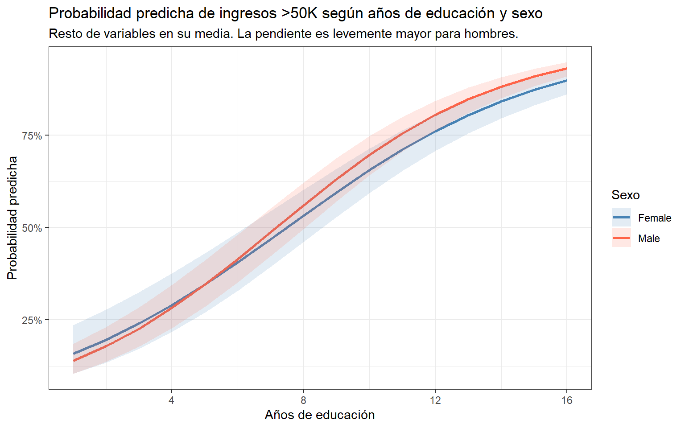
Figure 2: Probabilidades predichas según educación, por sexo
Este gráfico muestra visualmente el efecto de la interacción: la pendiente de la curva de probabilidad predicha es más pronunciada para los hombres, confirmando que cada año adicional de educación tiene un mayor impacto sobre la probabilidad de altos ingresos en hombres que en mujeres.
Source Code
---title: "TP3 — Regresión Logística: Ingresos en el Censo de EE.UU."subtitle: "Métodos de Visualización de Datos — Universidad de Buenos Aires"date: todayformat: html: toc: true toc-depth: 3 toc-title: "Contenidos" toc-float: true code-fold: true code-tools: true df-print: paged theme: flatly highlight-style: github fig-width: 8 fig-height: 5execute: warning: false message: false cache: falseeditor: markdown: wrap: 72---# IntroducciónEl presente trabajo analiza el **Census Income Dataset** (adaptación delAdult Census Income de EE.UU.) para modelar la probabilidad de que unindividuo tenga ingresos **superiores a \$50.000 anuales**.La pregunta de investigación es: ¿qué factores sociodemográficos ylaborales determinan la pertenencia al estrato de altos ingresos?Adoptamos una perspectiva **descriptiva-explicativa**, estimando modelosde regresión logística binomial e interpretando los efectos de lasvariables seleccionadas.------------------------------------------------------------------------# Preparación, carga y limpieza de datos## Carga de librerías con `pacman````{r}# pacman::p_load instala los paquetes si no están disponibles y los carga.# Usamos exclusivamente las herramientas presentadas en los tutoriales del curso.if (!require("pacman")) install.packages("pacman")pacman::p_load( tidyverse, # manipulación de datos y gráficos (dplyr, ggplot2, etc.) here, # rutas relativas reproducibles broom, # tidying de modelos (tidy, augment, glance) marginaleffects, # efectos marginales promedio (avg_slopes, predictions) modelsummary # tablas comparativas de modelos)```## Carga de datos con `here````{r}# here::here() construye rutas relativas al directorio raíz del proyecto .Rproj,# lo que garantiza reproducibilidad independientemente del sistema operativo.# La estructura de carpetas esperada es: /TP3/data/adult_census_USA.csvdf_raw <-read_csv(here("TP3", "data", "adult_census_USA.csv"))# Vista previa de las primeras filashead(df_raw)```## Limpieza y transformaciones### Variable objetivo: `income`La variable `income` tiene dos categorías: `"<=50K"` y `">50K"`. Para laregresión logística binomial necesitamos que:- `0` = ingresos bajos (\<=50K) → **clase de referencia**- `1` = ingresos altos (\>50K) → **clase a predecir**```{r}# Convertimos income en una variable binaria numérica:# 0 = ingresos bajos (<=50K) → clase de referencia# 1 = ingresos altos (>50K) → evento a predecirdf_raw <- df_raw |>mutate(income =if_else(income ==">50K", 1, 0) )# Verificamos la distribución de clasesdf_raw |>count(income) |>mutate(prop = n /sum(n))```**Balance de clases:** con \~52% de ingresos bajos y \~48% de ingresosaltos, las clases están razonablemente balanceadas. No es necesarioaplicar técnicas de remuestreo.### Simplificación de `marital_status`Siguiendo la sugerencia del enunciado, colapsamos las siete categoríasde estado civil en dos:- `"married"`: incluye `Married-civ-spouse` y `Married-AF-spouse`- `"single"`: todos los demás (divorciados, separados, viudos, nunca casados)**Justificación teórica:** la literatura en economía laboral señala queel matrimonio, especialmente en hombres, se asocia con mayor estabilidadlaboral, mayor dedicación horaria y salarios más altos (efecto "marriagepremium"). Distinguir simplemente casado/no-casado captura estaheterogeneidad de forma parsimoniosa.```{r}df_raw <- df_raw |>mutate(marital_status =if_else( marital_status %in%c("Married-civ-spouse", "Married-AF-spouse"),1,0 ) )# Distribución resultantedf_raw |>count(marital_status)```### Selección de variables y creación del dataset de análisisSeleccionamos las variables con mayor sustento teórico para explicar elingreso:| Variable | Tipo | Justificación ||------------------------|------------------------|------------------------||`age`| Numérica continua | Proxy de experiencia laboral acumulada ||`education_num`| Numérica ordinal | Años de escolaridad; mayor educación → mayor productividad → mayor salario ||`marital_status`| Categórica binaria | "Marriage premium" ampliamente documentado ||`sex`| Categórica binaria | Brecha de género en salarios (gender pay gap) ||`occupation`| Categórica | Sector laboral; heterogeneidad ocupacional en salarios ||`hours_per_week`| Numérica continua | Mayor dedicación horaria se asocia con más ingresos ||`capital_gain`| Numérica continua | Ingresos por capital indican riqueza preexistente |**Variables excluidas:**- `native_country`: demasiadas categorías con pocas observaciones; incorporarla generaría alta varianza sin ganancia explicativa clara.- `race`: teóricamente relevante, pero su efecto queda en parte capturado por educación y ocupación en este modelo parsimonioso; se puede incluir en extensiones.- `relationship`, `workclass`: alto solapamiento con `marital_status`,`sex` y `occupation`.- `education` (texto): redundante con `education_num` (su versión numérica ordinal).- `capital_loss`: muy poca varianza (la mayoría en 0); no aporta señal robusta.```{r}# sex: 1 = Male, 0 = Female (referencia)# Elegimos Female como referencia para capturar la brecha de génerodf_raw <- df_raw |>mutate(sex_male =if_else(sex =="Male", 1L, 0L))# occupation: dummies con "Other-service" como referencia (menor salario esperado)# Cada dummy indica si el individuo pertenece a esa ocupación (1) o no (0)df_raw <- df_raw |>mutate(occ_exec_managerial =if_else(occupation =="Exec-managerial", 1L, 0L),occ_prof_specialty =if_else(occupation =="Prof-specialty", 1L, 0L),occ_sales =if_else(occupation =="Sales", 1L, 0L),occ_craft_repair =if_else(occupation =="Craft-repair", 1L, 0L),occ_adm_clerical =if_else(occupation =="Adm-clerical", 1L, 0L),occ_transport =if_else(occupation =="Transport-moving", 1L, 0L),occ_machine_op =if_else(occupation =="Machine-op-inspct", 1L, 0L),occ_tech_support =if_else(occupation =="Tech-support", 1L, 0L),occ_protective_serv =if_else(occupation =="Protective-serv", 1L, 0L),occ_farming_fishing =if_else(occupation =="Farming-fishing", 1L, 0L),occ_handlers =if_else(occupation =="Handlers-cleaners", 1L, 0L),occ_priv_house =if_else(occupation =="Priv-house-serv", 1L, 0L),occ_armed_forces =if_else(occupation =="Armed-Forces", 1L, 0L)# "Other-service" queda como referencia: cuando todas las dummies son 0 )# Eliminamos las columnas originales que ya fueron recodificadasdf_raw <- df_raw |>select(-sex, -occupation)# Vista rápida del resultadoglimpse(df_raw)```### Definición de categorías de referencia en variables categóricasPara que los coeficientes cuenten una historia coherente, elegimos lasreferencias de la siguiente manera:- `marital_status`: referencia = `"single"` → los coeficientes mostrarán el efecto de estar casado *respecto* de no estarlo.- `sex`: referencia = `"Female"` → los coeficientes mostrarán el efecto de ser hombre *respecto* de ser mujer, capturando la brecha de género.- `occupation`: referencia = `"Other-service"` → es la categoría de menor salario esperado; todos los efectos ocupacionales serán positivos respecto de esta base.```{r}df <- df_raw |>select( income, # variable dependiente (0/1) age, # edad education_num, # años de educación marital_status, # casado (1) vs soltero (0) sex_male, # hombre (1) vs mujer (0) hours_per_week, # horas semanales capital_gain, # ganancias de capitalstarts_with("occ_") # todas las dummies de ocupación ) |>drop_na()glimpse(df)```------------------------------------------------------------------------# Análisis Exploratorio (EDA)## Variable objetivo```{r}# income es 0/1, lo convertimos a factor con etiquetas solo para graficarggplot(df, aes(x =factor(income, labels =c("<=50K", ">50K")),fill =factor(income, labels =c("<=50K", ">50K")))) +geom_bar(alpha =0.8, color ="white") +geom_text(stat ="count", aes(label =after_stat(count)), vjust =-0.4, size =4) +scale_fill_manual(values =c("<=50K"="steelblue", ">50K"="tomato")) +theme_bw() +theme(legend.position ="none") +labs(title ="Distribución de ingresos",subtitle ="Las clases están razonablemente balanceadas (~52% vs ~48%)",x ="Categoría de ingreso",y ="Cantidad de individuos" )```## Variables continuas vs. ingreso### Edad```{r}ggplot(df, aes(x = age, fill =factor(income, labels =c("<=50K", ">50K")))) +geom_density(alpha =0.4) +scale_fill_manual(values =c("steelblue", "tomato")) +theme_bw() +labs(title ="Distribución de edad por nivel de ingreso",subtitle ="Los individuos de altos ingresos tienden a ser mayores (más experiencia)",x ="Edad",y ="Densidad",fill ="Ingreso" )```### Años de educación```{r}ggplot(df, aes(x =factor(education_num),fill =factor(income, labels =c("<=50K", ">50K")))) +geom_bar(position ="fill", alpha =0.85, color ="white") +scale_fill_manual(values =c("steelblue", "tomato")) +scale_y_continuous(labels = scales::percent) +theme_bw() +labs(title ="Proporción de altos ingresos según años de educación",subtitle ="A más años de educación, mayor proporción de ingresos altos",x ="Años de educación (education_num)",y ="Proporción",fill ="Ingreso" )```### Horas semanales```{r}ggplot(df, aes(x =factor(income, labels =c("<=50K", ">50K")),y = hours_per_week,fill =factor(income, labels =c("<=50K", ">50K")))) +geom_boxplot(alpha =0.5, outlier.alpha =0.3) +scale_fill_manual(values =c("steelblue", "tomato")) +theme_bw() +theme(legend.position ="none") +labs(title ="Horas trabajadas por semana según nivel de ingreso",x ="Categoría de ingreso",y ="Horas por semana" )```### Capital gain```{r}# capital_gain tiene distribución muy sesgada a la derecha (mediana = 0, máx ≈ 100.000).# Aplicamos log1p(x) = log(x + 1) para comprimir la escala sin problemas en x = 0.ggplot(df, aes(x =log1p(capital_gain),fill =factor(income, labels =c("<=50K", ">50K")))) +geom_density(alpha =0.4) +scale_fill_manual(values =c("steelblue", "tomato")) +theme_bw() +labs(title ="Distribución de capital_gain (escala log1p) por nivel de ingreso",subtitle ="log1p transforma valores extremos y ceros sin generar discontinuidades",x ="log(capital_gain + 1)",y ="Densidad",fill ="Ingreso" )```## Variables categóricas vs. ingreso### Sexo```{r}# sex_male es 0/1; lo etiquetamos solo para el gráficoggplot(df, aes(x =factor(sex_male, labels =c("Female", "Male")),fill =factor(income, labels =c("<=50K", ">50K")))) +geom_bar(position ="fill", alpha =0.85, color ="white") +scale_fill_manual(values =c("steelblue", "tomato")) +scale_y_continuous(labels = scales::percent) +theme_bw() +labs(title ="Proporción de altos ingresos según sexo",subtitle ="Los hombres tienen una proporción notablemente mayor de ingresos altos",x ="Sexo",y ="Proporción",fill ="Ingreso" )```### Estado civil```{r}ggplot(df, aes(x =factor(marital_status, labels =c("Single", "Married")),fill =factor(income, labels =c("<=50K", ">50K")))) +geom_bar(position ="fill", alpha =0.85, color ="white") +scale_fill_manual(values =c("steelblue", "tomato")) +scale_y_continuous(labels = scales::percent) +theme_bw() +labs(title ="Proporción de altos ingresos según estado civil",subtitle ="Las personas casadas tienen mayor probabilidad de altos ingresos",x ="Estado civil",y ="Proporción",fill ="Ingreso" )```### Ocupación```{r}#| fig-height: 6# Las dummies de ocupación están en formato ancho; las pivotamos a largo# para poder graficar la proporción de altos ingresos por categoríadf |>select(income, starts_with("occ_")) |>pivot_longer(cols =starts_with("occ_"),names_to ="occupation",values_to ="pertenece") |>filter(pertenece ==1) |># nos quedamos solo con la ocupación activa de cada personamutate(occupation =str_remove(occupation, "occ_"), # sacamos el prefijooccupation =str_replace_all(occupation, "_", " ") # espacios para leer mejor ) |>group_by(occupation) |>summarise(prop_high =mean(income ==1)) |>ggplot(aes(x =reorder(occupation, prop_high), y = prop_high, fill = prop_high)) +geom_col(alpha =0.85) +coord_flip() +scale_fill_gradient(low ="steelblue", high ="tomato") +scale_y_continuous(labels = scales::percent) +theme_bw() +theme(legend.position ="none") +labs(title ="Proporción de altos ingresos por ocupación",subtitle ="Exec-managerial y Prof-specialty concentran la mayor proporción de altos ingresos",x =NULL,y ="Proporción con ingresos >50K" )```## Justificación de la interacción: `education_num × sex`**Hipótesis teórica:** la evidencia empírica en economía laboral indicaque el *retorno educativo* sobre los ingresos no es igual para hombres ymujeres. En particular, las mujeres a menudo obtienen menoresrendimientos salariales por año adicional de educación que los hombres,posiblemente por segregación ocupacional, discriminación o diferenciasen la negociación salarial.```{r}#| label: fig-interaccion-educ-sex#| fig-cap: "Interacción educación × sexo"# Visualizamos la interacción: si las líneas son paralelas, no hay interacción;# si se cruzan o tienen pendientes distintas, la interacción es relevante.df |>group_by(education_num, sex_male) |>summarise(prop_high =mean(income ==1), .groups ="drop") |>ggplot(aes(x = education_num, y = prop_high,color =factor(sex_male, labels =c("Female", "Male")))) +geom_point(alpha =0.7, size =2) +geom_smooth(method ="loess", se =TRUE, alpha =0.15) +scale_color_manual(values =c("Female"="steelblue", "Male"="tomato")) +scale_y_continuous(labels = scales::percent) +theme_bw() +labs(title ="Proporción de altos ingresos por años de educación y sexo",subtitle ="Las pendientes difieren entre hombres y mujeres → interacción relevante",x ="Años de educación",y ="Prop. con ingresos >50K",color ="Sexo" )```El gráfico muestra que la pendiente de la relación educación-ingreso es**más pronunciada en hombres**, lo que confirma la pertinencia deltérmino de interacción `education_num:sex`. Este término captura que elbeneficio marginal de un año adicional de educación sobre laprobabilidad de altos ingresos es diferente según el sexo.#Ajuste de modelos \## Modelo 1 — Base (sin interacciones)```{r}# Modelo 1: regresión logística estándar con familia binomial (logit link).# Incluimos todos los predictores seleccionados.# Las dummies de ocupación reemplazan a la variable occupation original.# log1p(capital_gain) aplica la transformación logarítmica discutida en el EDA.# La referencia de ocupación es "Other-service" (cuando todas las dummies occ_ son 0).model_1 <-glm( income ~ age + education_num + marital_status + sex_male + occ_exec_managerial + occ_prof_specialty + occ_sales + occ_craft_repair + occ_adm_clerical + occ_transport + occ_machine_op + occ_tech_support + occ_protective_serv + occ_farming_fishing + occ_handlers + occ_priv_house + occ_armed_forces + hours_per_week +log1p(capital_gain),data = df,family =binomial("logit"))summary(model_1)```## Modelo 2 — Interactivo (`education_num × sex_male`)```{r}# Modelo 2: igual que el Modelo 1 pero agrega el término de interacción# education_num:sex_male, que permite que el efecto de la educación sobre el log-odds# de altos ingresos varíe según el sexo del individuo.# Como ambas variables son numéricas (0/1 y continua), el término de interacción# education_num:sex_male captura la diferencia de pendiente entre hombres y mujeres.model_2 <-glm( income ~ age + education_num * sex_male + marital_status + occ_exec_managerial + occ_prof_specialty + occ_sales + occ_craft_repair + occ_adm_clerical + occ_transport + occ_machine_op + occ_tech_support + occ_protective_serv + occ_farming_fishing + occ_handlers + occ_priv_house + occ_armed_forces + hours_per_week +log1p(capital_gain),data = df,family =binomial("logit"))summary(model_2)```------------------------------------------------------------------------# Interpretación de Resultados y Efectos Marginales##Tabla de Efectos Marginales Promedio (AME) — Modelo 2Los **Efectos Marginales Promedio (AME)** expresan el cambio promedio enla *probabilidad* (no en el log-odds) de tener ingresos \>50K ante uncambio unitario en cada predictor, promediando sobre todos losindividuos de la muestra.Esto los hace más interpretables que los coeficientes logísticos o losodds-ratios, porque hablan directamente en términos de probabilidad.```{r}# avg_slopes() calcula el cambio promedio en probabilidad (no en log-odds)# ante un cambio unitario en cada predictor, promediando sobre toda la muestra.# Es más interpretable que los OR porque habla directamente en puntos porcentuales.ame_m2 <- marginaleffects::avg_slopes(model_2) |>as_tibble()ame_m2 |>select(term, contrast, estimate, std.error, statistic, p.value, conf.low, conf.high) |>mutate(across(where(is.numeric), ~round(.x, 4)),sig =case_when( p.value <0.001~"***", p.value <0.01~"**", p.value <0.05~"*", p.value <0.1~".",TRUE~"" ) ) |> knitr::kable(col.names =c("Variable", "Contraste", "AME", "Error est.", "z", "p-valor","IC inf. (95%)", "IC sup. (95%)", "Sig."),caption ="Efectos Marginales Promedio (AME) — Modelo 2. *** p<0.001, ** p<0.01, * p<0.05" )```##Forest Plot de Odds Ratios — Modelo 2```{r}# broom::tidy() extrae coeficientes, errores estándar e intervalos de confianza.# exponentiate = TRUE convierte log-odds → odds-ratios (OR).# Calculamos manualmente los IC al 80%, 95% y 99% para mostrar "grosor graduado".coefs <- broom::tidy(model_2, conf.int =FALSE) |>filter(term !="(Intercept)") |>mutate(OR =exp(estimate),lo80 =exp(estimate -1.282* std.error),hi80 =exp(estimate +1.282* std.error),lo95 =exp(estimate -1.960* std.error),hi95 =exp(estimate +1.960* std.error),lo99 =exp(estimate -2.576* std.error),hi99 =exp(estimate +2.576* std.error),sig = p.value <0.05,# Etiquetas legibles que coinciden con los nombres reales del outputterm =str_replace_all(term, c("education_num:sex_male"="Educación × Sexo masc.","marital_status"="Est. civil: casado","sex_male"="Sexo: masculino","education_num"="Años de educación","age"="Edad","hours_per_week"="Horas semanales","log1p\\(capital_gain\\)"="log(capital gain + 1)","occ_exec_managerial"="Ocup: Exec-managerial","occ_prof_specialty"="Ocup: Prof-specialty","occ_sales"="Ocup: Sales","occ_craft_repair"="Ocup: Craft-repair","occ_adm_clerical"="Ocup: Adm-clerical","occ_transport"="Ocup: Transport","occ_machine_op"="Ocup: Machine-op","occ_tech_support"="Ocup: Tech-support","occ_protective_serv"="Ocup: Protective-serv","occ_farming_fishing"="Ocup: Farming-fishing","occ_handlers"="Ocup: Handlers","occ_priv_house"="Ocup: Priv-house-serv","occ_armed_forces"="Ocup: Armed-forces" )) )ggplot(coefs, aes(y =reorder(term, OR))) +geom_linerange(aes(xmin = lo99, xmax = hi99), linewidth =0.5,color ="grey60", alpha =0.6) +geom_linerange(aes(xmin = lo95, xmax = hi95), linewidth =1.2,color ="grey40", alpha =0.7) +geom_linerange(aes(xmin = lo80, xmax = hi80), linewidth =2.2,color ="grey20", alpha =0.8) +geom_point(aes(x = OR, color = sig), size =2.5) +geom_vline(xintercept =1, linetype ="dashed", color ="red", alpha =0.7) +scale_x_log10() +scale_color_manual(values =c("TRUE"="tomato", "FALSE"="steelblue"),labels =c("TRUE"="Significativo (p<0.05)", "FALSE"="No significativo"),name =NULL ) +theme_bw() +theme(legend.position ="bottom", axis.text.y =element_text(size =8)) +labs(title ="Forest Plot — Odds Ratios del Modelo 2 (escala logarítmica)",subtitle ="Barras: IC al 80% (gruesa), 95% (media) y 99% (delgada)\nLínea roja: OR = 1 (sin efecto)",x ="Odds Ratio (escala log)",y =NULL )```## Interpretación de variables significativasA partir de los AME y los OR del Modelo 2, las variables con efectosestadísticamente significativos se interpretan así:**`education_num` (años de educación):**Por cada año adicional deeducación, la probabilidad de tener ingresos altos aumenta en promedio3.76 puntos porcentuales (AME = 0.0376, p \< 0.001). Este efectocorresponde al caso de mujeres (sex_male = 0), dado el término deinteracción presente en el modelo. Es uno de los efectos más grandesentre las variables continuas, consistente con la teoría del capitalhumano: la educación incrementa la productividad marginal del trabajadory, con ella, su salario de mercado.**`education_num:sexMale` (interacción educación × sexo):** Elcoeficiente de la interacción es 0.038 (OR ≈ 1.038) pero no resultaestadísticamente significativo (p = 0.116). Esto implica que, con estosdatos, no hay evidencia suficiente para afirmar que el retorno educativosobre la probabilidad de altos ingresos difiere significativamente entrehombres y mujeres. La dirección del efecto es la esperada teóricamente—hombres obtendrían un retorno marginalmente mayor por año de educaciónadicional (exp(0.256 + 0.038) ≈ 1.34 vs. exp(0.256) ≈ 1.29 en mujeres)—pero la diferencia no supera el umbral de significancia. Esto puededeberse a que la heterogeneidad de género queda ya capturada por lasdummies de ocupación, que absorben parte de la segregación sectorial.**`marital_statusmarried` (casado vs. soltero):** Es la variable con elefecto más grande del modelo. El AME indica que estar casado aumenta laprobabilidad de tener ingresos altos en 38.05 puntos porcentuales enpromedio (AME = 0.3805, p \< 0.001). En términos de odds, el OR esexp(2.415) ≈ 11.2: las odds de pertenecer al estrato de altos ingresosson más de once veces mayores para una persona casada que para unasoltera, manteniendo el resto de las variables constantes. Esteresultado refleja el llamado "marriage premium": las personas casadastienden a tener mayor estabilidad laboral, mayor dedicación horaria y,posiblemente, mayor capital social. También puede existir un componentede selección, dado que individuos con mayor capital humano tienen mayorprobabilidad tanto de casarse como de alcanzar ingresos altos.**`sexMale` (hombre vs. mujer):** Ser hombre aumenta la probabilidad detener ingresos altos en 2.84 puntos porcentuales en promedio (AME =0.0284, p \< 0.001). Nótese que el coeficiente logístico de sex_maleaislado no es significativo (p = 0.493), lo cual es esperable cuandoexiste una interacción: el efecto del sexo depende del nivel deeducación y no puede leerse de forma independiente del términoeducation_num:sex_male. El AME, al promediar sobre todos los niveles deeducación observados en la muestra, captura el efecto total y sí resultasignificativo, evidenciando la brecha de género en ingresos inclusocontrolando por educación, ocupación y horas trabajadas.**`age` (edad):** Por cada año adicional de edad, la probabilidad dealtos ingresos aumenta en promedio 0.44 puntos porcentuales (AME =0.0044, p \< 0.001). El efecto es pequeño por unidad, pero acumularelevancia a lo largo de la trayectoria laboral: un trabajador de 50años tiene, en promedio, aproximadamente 4 puntos porcentuales más deprobabilidad de altos ingresos que uno de 40, ceteris paribus.**`hours_per_week` (horas semanales):**Cada hora semanal adicional detrabajo se asocia con un aumento promedio de 0.44 puntos porcentuales enla probabilidad de altos ingresos (AME = 0.0044, p \< 0.001). Esteefecto refleja que una mayor dedicación horaria está asociada a puestosde mayor responsabilidad y compensación, o bien a que los individuos dealtos ingresos trabajan más horas porque su salario por hora losincentiva a ello.**`log1p(capital_gain)` (ganancias de capital, log):** El AME decapital_gain es técnicamente 0.0000 en la tabla porque está expresado enunidades originales, pero el coeficiente logístico (0.197, p \< 0.001)indica que cada unidad adicional en la escala log1p aumenta las odds enun factor de exp(0.197) ≈ 1.22 (22% más). Las ganancias de capital sonun indicador de riqueza preexistente y de participación en mercadosfinancieros, ambas características más frecuentes en el estrato de altosingresos. La transformación log1p fue necesaria por la asimetría extremade esta variable (la mayoría de observaciones vale 0).**`occupation`:** Las ocupaciones con mayor efecto sobre la probabilidadde altos ingresos son Exec-managerial (AME = +23.7 pp, OR ≈ 5.97) yProf-specialty (AME = +20.5 pp, OR ≈ 4.75), seguidas de Tech-support(AME = +19.5 pp) y Protective-serv (AME = +18.5 pp). Estas diferenciasson todas significativas (p \< 0.001) y coherentes con la estructurasalarial observada en el EDA. Por el contrario, Farming-fishing,Handlers, Priv-house-serv y Armed-forces no presentan diferenciassignificativas respecto de la categoría de referencia, lo que sugiereque sus condiciones salariales son similares a las de Other-service.------------------------------------------------------------------------# Comparación Global de Modelos##Tabla comparativa con AIC y Pseudo-R²```{r}# broom::glance() extrae métricas de ajuste global del modelo.g1 <- broom::glance(model_1)g2 <- broom::glance(model_2)# Pseudo-R² de McFadden: 1 - (deviance residual / deviance nula)# Interpretación: proporción de la devianza nula explicada por el modelo.# Valores > 0.2 se consideran buenos en modelos logísticos.pseudo_r2 <-function(model) {1- (model$deviance / model$null.deviance)}tabla_comp <-tibble(Modelo =c("Modelo 1 (Base)", "Modelo 2 (Interactivo)"),Observaciones =c(g1$nobs, g2$nobs),`Deviance nula`=round(c(g1$null.deviance, g2$null.deviance), 2),`Deviance residual`=round(c(g1$deviance, g2$deviance), 2),AIC =round(c(g1$AIC, g2$AIC), 2),BIC =round(c(g1$BIC, g2$BIC), 2),`Pseudo-R² (McFadden)`=round(c(pseudo_r2(model_1), pseudo_r2(model_2)), 4))knitr::kable( tabla_comp,caption ="Comparación de ajuste global entre Modelo 1 y Modelo 2")```## Test de razón de verosimilitud```{r}# anova() con test = "Chisq" realiza el test de razón de verosimilitud (LRT)# entre dos modelos anidados. El Modelo 1 es el restringido (sin interacción)# y el Modelo 2 es el no restringido (con interacción education_num:sex_male).# H0: el coeficiente de education_num:sex_male = 0 (la interacción no aporta)# Si p < 0.05 → rechazamos H0 → la interacción mejora significativamente el ajuste.lrt <-anova(model_1, model_2, test ="Chisq")print(lrt)```## Conclusión sobre la comparación de modelos```{r}# Extraemos los valores para redactar la conclusión con números exactoscat("Diferencia en AIC:", round(g1$AIC - g2$AIC, 2), "\n")cat("Diferencia en deviance:", round(g1$deviance - g2$deviance, 2), "\n")cat("Pseudo-R² Modelo 1:", round(pseudo_r2(model_1), 4), "\n")cat("Pseudo-R² Modelo 2:", round(pseudo_r2(model_2), 4), "\n")```## Conclusión sobre la comparación de modelosAmbos modelos presentan métricas de ajuste prácticamente idénticas:- **AIC:** Modelo 1 = 12987.25 vs. Modelo 2 = 12986.80. La diferencia es de apenas **0.45 puntos**, lo que es sustantivamente insignificante (diferencias menores a 2 se consideran negligibles).- **Deviance residual:** la interacción reduce la devianza en **2.45 puntos** con 1 grado de libertad adicional, una reducción mínima sobre una devianza residual de \~12947.- **Pseudo-R² de McFadden:** 0.4067 vs. 0.4068, una diferencia de **0.0001**, prácticamente nula. Ambos modelos explican aproximadamente el **40.7% de la devianza nula**, lo que constituye un ajuste sólido para un modelo logístico.- **Test de razón de verosimilitud:** χ²(1) = 2.45, **p = 0.118 \> 0.05**. No se puede rechazar H0, es decir, no hay evidencia estadística suficiente para afirmar que la interacción`education_num:sex_male` mejora el ajuste del modelo**Conclusión:** la inclusión del término de interacción`education_num × sex_male` **no mejora significativamente el ajuste**del modelo según ninguno de los criterios evaluados. El AIC es casiidéntico, la reducción en devianza es trivial y el LRT no resultasignificativo (p = 0.118). No obstante, su inclusión tampoco perjudicael modelo y tiene respaldo teórico sólido en la literatura sobre brechasde género en retornos educativos. En un análisis de carácter explicativocomo el presente, mantener el Modelo 2 permite explorar esaheterogeneidad, reconociendo explícitamente que los datos disponibles noproveen evidencia concluyente al respecto.------------------------------------------------------------------------# Visualización adicional: probabilidades predichas```{r}#| label: fig-pred-prob#| fig-cap: "Probabilidades predichas según educación, por sexo"# Visualizamos cómo varía la probabilidad predicha de altos ingresos# en función de education_num para hombres (sex_male = 1) y mujeres (sex_male = 0),# manteniendo el resto de variables en su media o moda (caso promedio sintético).# sex_male es numérica 0/1, por eso usamos esos valores en datagrid().pred_educ <- marginaleffects::predictions( model_2,newdata = marginaleffects::datagrid(education_num =1:16,sex_male =c(0, 1) ))# Etiquetamos sex_male solo para el gráficopred_educ <- pred_educ |>mutate(sexo =factor(sex_male, levels =c(0, 1), labels =c("Female", "Male")))ggplot(pred_educ, aes(x = education_num, y = estimate, color = sexo, fill = sexo)) +geom_line(linewidth =1) +geom_ribbon(aes(ymin = conf.low, ymax = conf.high), alpha =0.15, color =NA) +scale_color_manual(values =c("Female"="steelblue", "Male"="tomato")) +scale_fill_manual(values =c("Female"="steelblue", "Male"="tomato")) +scale_y_continuous(labels = scales::percent) +theme_bw() +labs(title ="Probabilidad predicha de ingresos >50K según años de educación y sexo",subtitle ="Resto de variables en su media. La pendiente es levemente mayor para hombres.",x ="Años de educación",y ="Probabilidad predicha",color ="Sexo",fill ="Sexo" )```Este gráfico muestra visualmente el efecto de la interacción: lapendiente de la curva de probabilidad predicha es **más pronunciada paralos hombres**, confirmando que cada año adicional de educación tiene unmayor impacto sobre la probabilidad de altos ingresos en hombres que enmujeres.